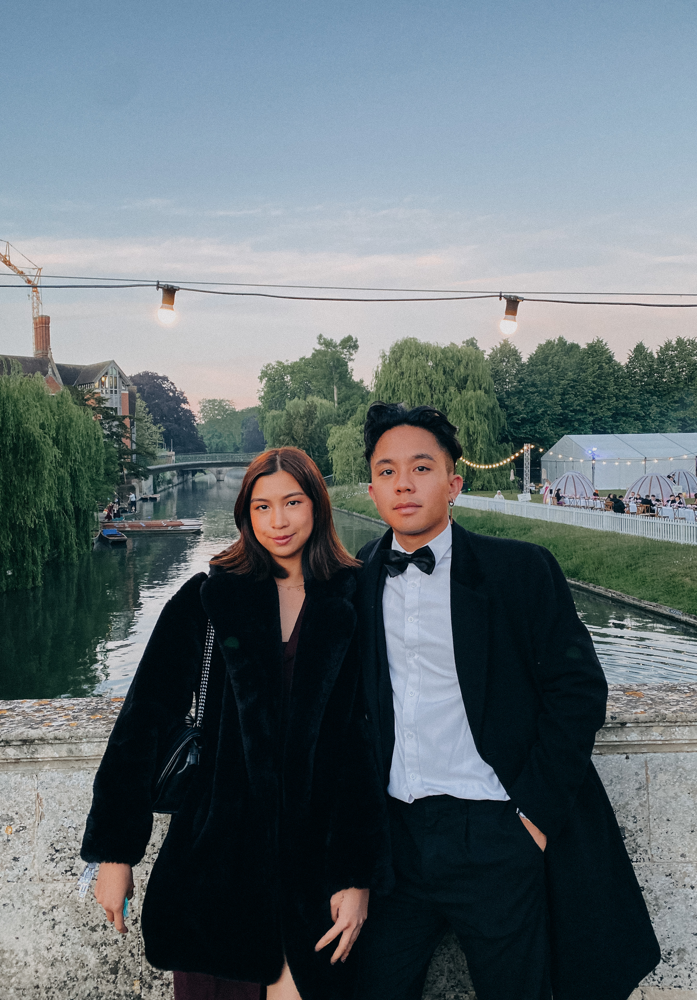

TEMPY CHAROENVASNADUMRONG
TEMPY CHAROENVASNADUMRONG

I was born in Bangkok but I currently live in London.
In 2021, I graduated from the University of Cambridge with a MEng in Information and Computer Engineering.
Since then, I have been exploring the beautiful world of software development as a software engineer with Cisco in the internal infrastructure team.
As I spend most of my time working on the back-end, I've written this website from scratch as a fun side-project and to learn some HTML, CSS and JavaScript. Here, I document all the interesting things I'm learning both in and outside of work!